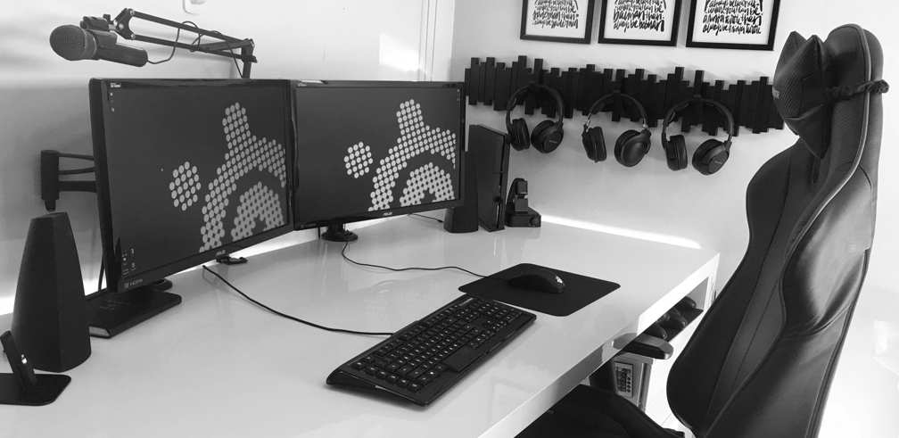
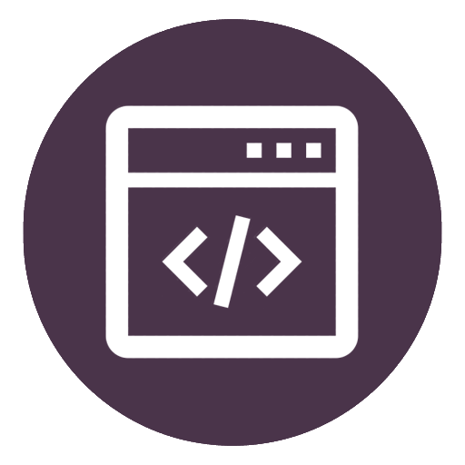

Who am i?
Hi! My name is Bram and I am a full stack software developer based in the Netherlands. I am a person who has a high passion in design, technology and art in general. I always loved creating things since I was a child, and this passion has led me into the design field. I have a real urge to learn new tools and languages that can help me to create even better things, and I strive to become the best at what I do. UX design is really important to me and I think looking at the user is key to good design.
Back in 2003 I started a study as IT professional. In my last year I came to the conclusion that IT wasn't diverse enough and that I didn't want to spend my life doing the same thing every day. I knew I wanted to do something creative and it always amazed me that creativity had such an endless amount of possibilities. In 2007 I came across the Game Design & Development study and I instantly knew this was what I wanted to do. So I applied for the selection and made it on the first tryout. After earning my bachelor's degree it was hard to find work in this field and I ended up getting scouted for a software developer position. Which I started in 2013. First I worked on a client application and later moved to a web based application.
Now I am a full stack developer with a demonstrated history of working in the information technology and services industry. Also I keep improving myself with new tools and languages.
Good design isn't bleeding edge technology or fancy looks. It's about conveying an idea to the user, in a way that is understandable on the first try.
Skills Overview
|

Frontend✔️ UX Design ✔️ JavaScript ✔️ HTML ✔️ CSS ✔️ Three JS |
Backend✔️ Java ✔️ Delphi ✔️ SQL / PL/SQL ✔️ Databases ✔️ Linux ✔️ SOAP ✔️ Web Services ✔️ ADF |
Others✔️ Git ✔️ Version Control ✔️ Weblogic ✔️ Photoshop ✔️ 3D Studio Max ✔️ XML ✔️ Oracle |
|---|